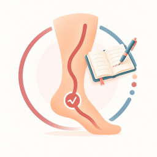

VeinJournal Beta
Privacy Policy
VeinJournal stores personal records on your device and has no servers receiving or storing them. Optional Apple Health connections, exports, and backups use the services and destinations you choose.
Effective date: October 27, 2026.
Data the app may handle
Depending on how you use VeinJournal, the app may handle health context you enter, notes, pain and swelling scores, water intake, medication products, schedules and dose history, weight measurements, photo measurement annotations, leg elevation and rest records, compression details, activity sessions, travel and Flight Mode records, consultations, attachments, photos, reports, exports, backups, and optional support purchase status from Apple StoreKit.
With your permission, VeinJournal may read available Apple Health activity, sleep, weight, water intake, and selected medication records, along with Motion activity information. Separately enabled water and weight connections can save newly entered measurements to Apple Health. Coached activity can also save workouts when that Health capability is enabled. Imported records and your local corrections remain distinct.
Local-first design
VeinJournal has no backend account or servers storing your personal records, and does not sell them. Apple Health and any Apple syncing operate under your Apple settings. You can manage collection preferences in Permissions & Access and system permissions in iOS Settings.
Sharing, exports, and backups
You choose when and where to export or share photos, files, PDF reports, and CSV data. Optional automatic backups write to a folder you select through Files, which may use iCloud Drive or another compatible provider. Once enabled, those backups can run without another share action each time. Your chosen provider handles those files under its own terms and privacy policy. VeinJournal cannot verify whether Apple device backups include your app data, and Duck Code cannot recover records from a VeinJournal server.
Optional support and payment safety
VeinJournal is free to use. The only legitimate payments are optional in-app support purchases through Apple's App Store system. They never unlock features. If anyone asks you to pay outside the app or App Store flow, treat it as a scam and report it.
Feedback email
If you send feedback, your email is handled by your chosen mail provider and received at duck_code_contact@proton.me. Please avoid sending sensitive information unless you choose to include it.
Deleting data
Uninstalling the app removes its local app data, but does not remove exported files, external backups, or Apple Health records. Permissions & Access includes a confirmed cleanup action for supported Health records created by VeinJournal; it does not delete records belonging to other apps or devices. You can also manage Health records directly in Apple Health. Files already shared or saved elsewhere must be managed at their destination.
Contact
Questions or privacy requests can be sent to duck_code_contact@proton.me.